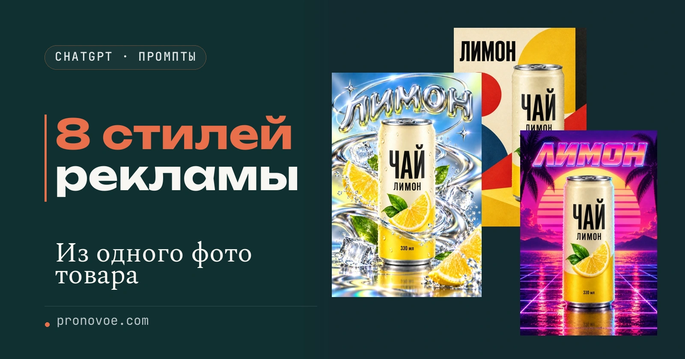
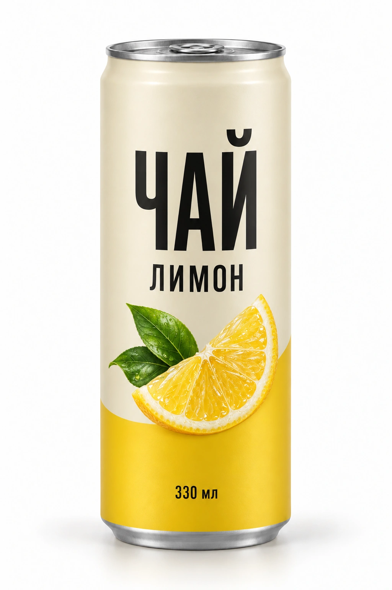
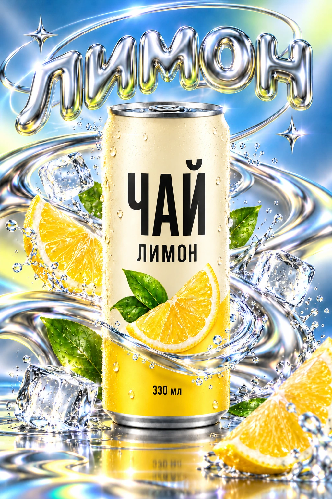
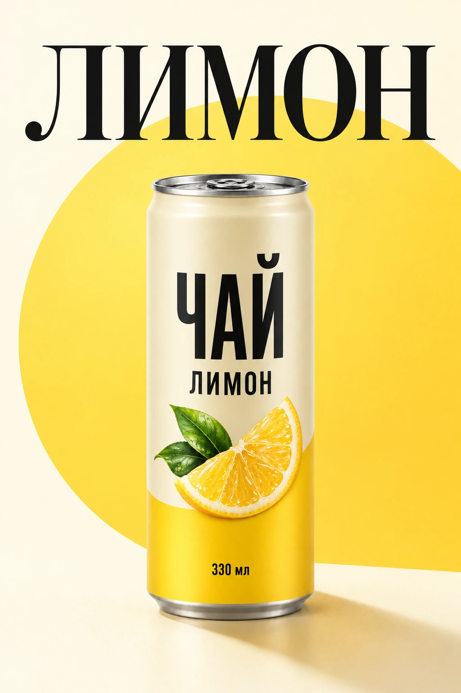
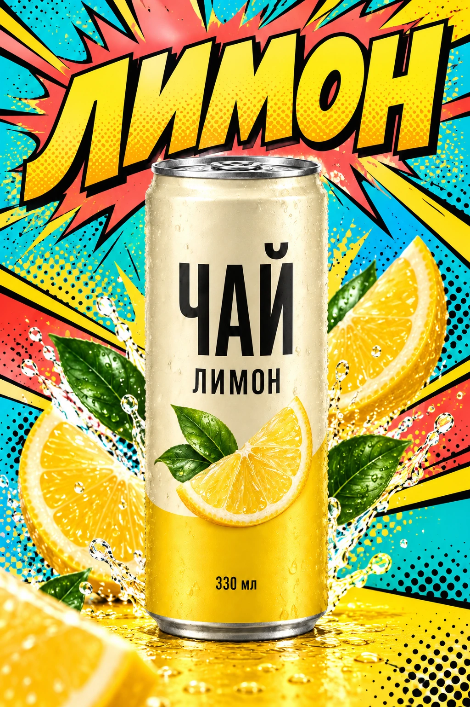
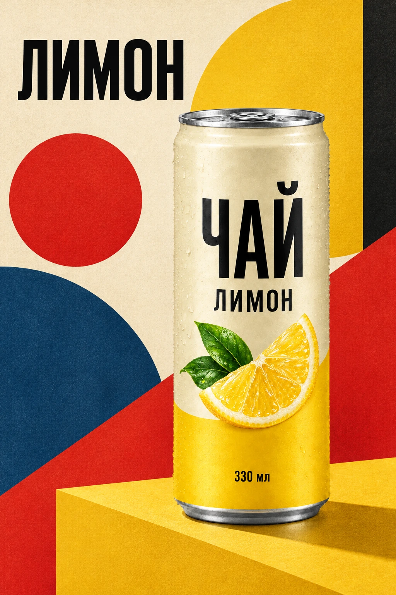
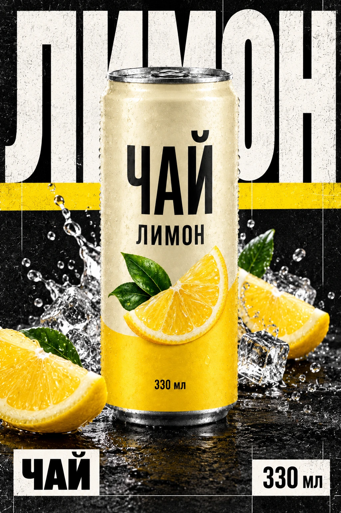
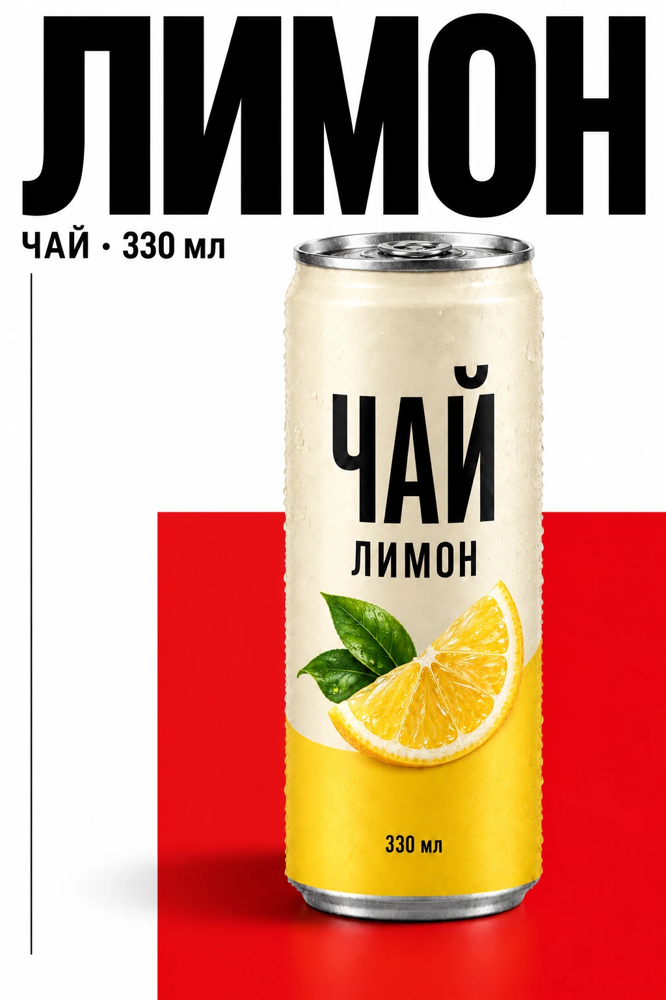
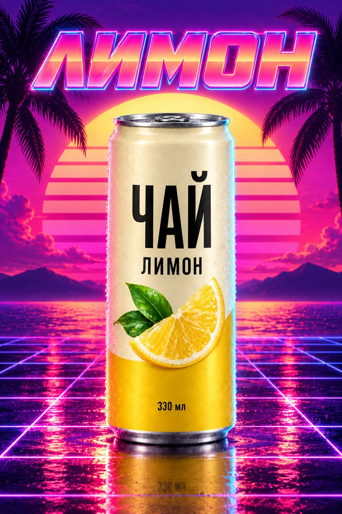
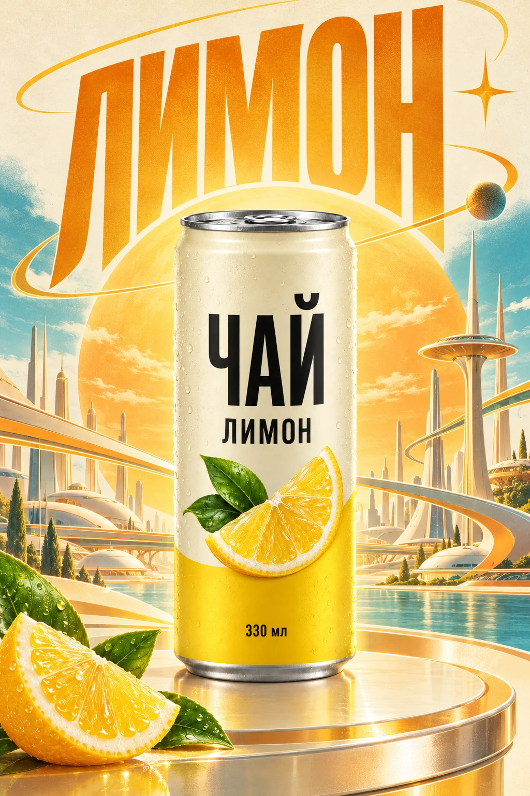

Реклама товара · Готовые промпты.

8 стилей рекламы из фото товара: промпты для ChatGPT
Начальный уровень
Есть фотография товара, а для рекламы хочется несколько разных картинок. Как будет смотреться твоя упаковка на спокойном светлом фоне, среди яркой графики или в голубой воде? Здесь восемь примеров и полные промпты, которые можно отправить в ChatGPT со своим фото.
Во всех примерах одна вымышленная банка лимонного чая. Меняются фон, свет и графика вокруг неё. Выбери понравившееся оформление, получи свою картинку и сравни упаковку с исходником.
Содержание статьи
Исходная фотография и рекламный плакат
Слева исходная банка, справа оформление с голубой водой и хромом. Рисунок лимона и надписи относятся к самой упаковке. Вода, фон и крупный заголовок добавлены вокруг товара.


Можно взять исходную картинку банки для пробы или сразу использовать свой товар. Для своего товара выбери чёткое фото, на котором товар виден целиком, а название, рисунок и логотип можно разобрать.

Создаём рекламу из фото товара в ChatGPT
- Открой ChatGPT и начни новый чат. Прикрепи фотографию товара к сообщению через кнопку добавления файла рядом с полем ввода. Дождись, пока рядом с сообщением появится вложение.
- Выбери один из восьми стилей ниже. Нажми «Скопировать» и вставь весь промпт в поле сообщения. Отправь его вместе с фотографией.
- Дождись изображения в ответе. Если ChatGPT прислал только описание, напиши: «Создай само изображение по этому заданию, используя приложенное фото».
- Сравни название, логотип, рисунок и форму товара с исходником. Ниже есть отдельные запросы для исправления деталей.
Результат: в чате появится рекламная картинка с твоим товаром в выбранном оформлении.
Для следующего стиля начни новый чат и снова прикрепи исходную фотографию. Так ты задашь новый вариант от исходника, а не от предыдущего постера. Каждый промпт ниже самостоятельный: добавлять к нему текст из соседних блоков не нужно.
Примеры показывают направление оформления. С твоим товаром композиция и детали будут отличаться. Нейросеть может изменить буквы и упаковку, даже если в запросе сказано их сохранить. Для загрузки фото и создания картинок действуют ограничения твоего аккаунта ChatGPT.
1. Минимализм
Здесь всё внимание на банке: тёплый фон, большой жёлтый круг и мягкая тень. Подойдёт, когда нужен спокойный рекламный кадр с крупно показанным товаром.

Создай вертикальный рекламный постер формата 2:3 с товаром из приложенной фотографии. Используй фотографию как точный образец: сохрани форму и пропорции товара, материал упаковки, её цвета, логотип, рисунок и все надписи. Товар должен быть крупным, полностью видимым и узнаваемым. Меняй окружение, свет, композицию и графику вокруг товара. Не добавляй другие бренды, цены и новые свойства продукта. Если нужен заголовок, возьми название с упаковки. Сохрани точное написание. Не добавляй подпись с названием стиля и водяные знаки.
Тёплый светлый фон, один большой плоский круг в основном цвете упаковки, мягкий направленный свет и аккуратная тень. Товар чуть ниже центра, сверху крупное название из упаковки элегантным чёрным шрифтом. Много свободного пространства. Без дополнительных фруктов, льда, брызг, декораций и капель вокруг товара.2. Поп-арт
Бирюзовые и коралловые панели, печатные точки, жёлтые вспышки и крупные буквы делают кадр похожим на комикс. Товар остаётся фотореалистичным.

Создай вертикальный рекламный постер формата 2:3 с товаром из приложенной фотографии. Используй фотографию как точный образец: сохрани форму и пропорции товара, материал упаковки, её цвета, логотип, рисунок и все надписи. Товар должен быть крупным, полностью видимым и узнаваемым. Меняй окружение, свет, композицию и графику вокруг товара. Не добавляй другие бренды, цены и новые свойства продукта. Если нужен заголовок, возьми название с упаковки. Сохрани точное написание. Не добавляй подпись с названием стиля и водяные знаки.
Яркая реклама в стиле поп-арт: бирюзовые, коралловые, жёлтые и чёрные панели, полутоновые точки, чёрные комиксные контуры и графический взрыв за товаром. Сам товар оставь фотореалистичным, не перерисовывай упаковку в комикс. Вверху крупное наклонное название с чёрным контуром. Если используешь ингредиенты из фотографии упаковки, они не должны закрывать товар.3. Баухаус
Баухаус здесь означает оформление из простой геометрии: красных, синих и жёлтых фигур. Упаковка стоит перед ними, а не превращается в рисунок.

Создай вертикальный рекламный постер формата 2:3 с товаром из приложенной фотографии. Используй фотографию как точный образец: сохрани форму и пропорции товара, материал упаковки, её цвета, логотип, рисунок и все надписи. Товар должен быть крупным, полностью видимым и узнаваемым. Меняй окружение, свет, композицию и графику вокруг товара. Не добавляй другие бренды, цены и новые свойства продукта. Если нужен заголовок, возьми название с упаковки. Сохрани точное написание. Не добавляй подпись с названием стиля и водяные знаки.
Графический плакат Баухаус на тёплой бумаге цвета слоновой кости. Большие красные, синие, жёлтые и чёрные круги, полукруги и прямоугольники, одна выразительная диагональ. Продуманная асимметричная композиция. Товар ближе к правой стороне, слева сверху название строгим чёрным геометрическим шрифтом. Сохрани фотографическую реалистичность товара, добавь тонкую фактуру печати только фону.4. Y2K: хром и вода
Y2K - глянцевая графика в духе начала 2000-х. В этом варианте голубой фон сочетается с хромом, а одна прозрачная волна проходит перед нижней частью банки.
Создай вертикальный рекламный постер формата 2:3 с товаром из приложенной фотографии. Используй фотографию как точный образец: сохрани форму и пропорции товара, материал упаковки, её цвета, логотип, рисунок и все надписи. Товар должен быть крупным, полностью видимым и узнаваемым. Меняй окружение, свет, композицию и графику вокруг товара. Не добавляй другие бренды, цены и новые свойства продукта. Если нужен заголовок, возьми название с упаковки. Сохрани точное написание. Не добавляй подпись с названием стиля и водяные знаки.
Глянцевая реклама начала 2000-х: голубой перламутровый фон, обтекаемые завитки жидкого хрома, серебристые кольца и хромированный объёмный заголовок. Сама упаковка остаётся в своих исходных цветах. Одна прозрачная изогнутая водяная лента проходит перед нижней свободной частью товара и уходит за него по краям. Размести её ниже основного рисунка и выше надписи объёма, если такая свободная полоса есть. Не закрывай логотип, рисунок и буквы. Верхнюю переднюю водяную ленту не добавляй. Вода прозрачная с тонкими голубыми бликами, не металлический ремень.5. Брутализм
Брутализм здесь строится на резком контрасте: почти чёрный фон, крупные белые буквы и жёлтые полосы. Надписи на самой упаковке должны оставаться читаемыми.

Создай вертикальный рекламный постер формата 2:3 с товаром из приложенной фотографии. Используй фотографию как точный образец: сохрани форму и пропорции товара, материал упаковки, её цвета, логотип, рисунок и все надписи. Товар должен быть крупным, полностью видимым и узнаваемым. Меняй окружение, свет, композицию и графику вокруг товара. Не добавляй другие бренды, цены и новые свойства продукта. Если нужен заголовок, возьми название с упаковки. Сохрани точное написание. Не добавляй подпись с названием стиля и водяные знаки.
Почти чёрный шероховатый бумажный фон, огромная белая рубленая типографика за товаром, жёлтая полоса и контрастные прямоугольники. Видимая строгая модульная сетка, резкий предметный свет и чёткая тень. Края фоновых букв могут уходить за поля, но название должно оставаться узнаваемым. Сам товар фотореалистичный, этикетка читаемая. Без военной символики и выдуманных технических характеристик.6. Швейцарская типографика
В швейцарской типографике текст и цветовые поля выстроены по строгой сетке. В нашем примере банку выделяет большой красный прямоугольник.

Создай вертикальный рекламный постер формата 2:3 с товаром из приложенной фотографии. Используй фотографию как точный образец: сохрани форму и пропорции товара, материал упаковки, её цвета, логотип, рисунок и все надписи. Товар должен быть крупным, полностью видимым и узнаваемым. Меняй окружение, свет, композицию и графику вокруг товара. Не добавляй другие бренды, цены и новые свойства продукта. Если нужен заголовок, возьми название с упаковки. Сохрани точное написание. Не добавляй подпись с названием стиля и водяные знаки.
Белый фон, асимметричная сетка, строгий чёрный гротеск, большой насыщенно-красный прямоугольник в нижней правой части. Сверху крупное название из упаковки. Товар ниже и правее, частично на фоне красного поля, целиком виден. Одна тонкая чёрная линия подчёркивает сетку. Выверенные поля, чистая предметная тень и минимум декоративных деталей.7. Vaporwave: неон
Vaporwave - стилизация под цифровую графику 1980-1990-х: розовый и фиолетовый свет, сетка и закатный круг. Цвет упаковки при этом сохраняем.

Создай вертикальный рекламный постер формата 2:3 с товаром из приложенной фотографии. Используй фотографию как точный образец: сохрани форму и пропорции товара, материал упаковки, её цвета, логотип, рисунок и все надписи. Товар должен быть крупным, полностью видимым и узнаваемым. Меняй окружение, свет, композицию и графику вокруг товара. Не добавляй другие бренды, цены и новые свойства продукта. Если нужен заголовок, возьми название с упаковки. Сохрани точное написание. Не добавляй подпись с названием стиля и водяные знаки.
Пурпурно-розовый закат, большой полосатый солнечный диск, фиолетово-синяя перспективная сетка пола, тёмные силуэты пальм по краям и розовые неоновые отражения. Товар крупный и фотореалистичный, исходные цвета упаковки сохраняются; неон подсвечивает только края и поверхность. Вверху название широким ретро-шрифтом с розово-голубым контуром. Главный объект ничем не перекрыт.8. Ретрофутуризм
Ретрофутуризм показывает будущее таким, каким его представляли в старой фантастике: орбиты, плавная архитектура и тёплые цвета. Банка остаётся фотографической.

Создай вертикальный рекламный постер формата 2:3 с товаром из приложенной фотографии. Используй фотографию как точный образец: сохрани форму и пропорции товара, материал упаковки, её цвета, логотип, рисунок и все надписи. Товар должен быть крупным, полностью видимым и узнаваемым. Меняй окружение, свет, композицию и графику вокруг товара. Не добавляй другие бренды, цены и новые свойства продукта. Если нужен заголовок, возьми название с упаковки. Сохрани точное написание. Не добавляй подпись с названием стиля и водяные знаки.
Оптимистическая реклама космической эпохи 1960-х. Кремовый фон, тёплый оранжевый, золотистый жёлтый и бирюзовые акценты. За товаром орбитальные дуги, круглый световой портал и плавная архитектура вымышленного города будущего. Фон как качественная ретро-иллюстрация с лёгкой фактурой печати, товар остаётся фотореалистичным. Сверху вытянутый выразительный заголовок. Без пальм, неоновой сетки и комиксных точек.Исправляем упаковку и лишние детали
Если фон нравится, но изменились буквы или рисунок, прикрепи исходную фотографию ещё раз в тот же чат и отправь этот запрос.
Сохрани фон, свет и композицию. Верни товару форму, логотип, рисунок и надписи как на исходной фотографии. Исправь только упаковку. Исходное фото прикрепляю ещё раз.Для варианта с водой можно отдельно убрать верхнюю волну и оставить одну нижнюю.
Оставь одну прозрачную водяную ленту перед свободной нижней частью товара. Не закрывай рисунок и текст. Верхнюю переднюю ленту убери. Остальное сохрани.Если у твоей упаковки нет свободного места для передней волны, попроси провести всю воду за товаром. Сохранять рисунок и надписи важнее, чем повторить положение волны.
Результат: исправленный вариант появляется в том же чате. Ещё раз сравни его с исходником: просьба сохранить деталь не гарантирует, что она сохранится точно.
Проверяем и сохраняем картинку
- Название и логотип совпадают с исходником, в буквах нет ошибок.
- Форма, цвет упаковки и рисунок не изменились.
- В кадре нет выдуманных скидок, состава или свойств продукта.
- Вода, декорации и крупные фоновые буквы не закрывают важное на товаре.
Открой получившуюся картинку в ChatGPT и воспользуйся кнопкой сохранения или скачивания. Для публикации выбери версию, на которой упаковка читается и соответствует реальному товару.
В промптах задан вертикальный формат 2:3, как у примеров на этой странице. Если нужен фон для рилса на весь экран, перед отправкой замени в первой строке «2:3» на «9:16». Расположение предметов при этом может измениться.
Частые вопросы
Нужно ли описывать свой товар вместо банки?
Нет. Прикрепи фото своего товара и скопируй весь промпт. Он уже просит использовать упаковку из приложенной фотографии. Уточнение понадобится, если нейросеть не разобрала название или важную деталь.
Получится ли точно такая же картинка?
Точное совпадение не обещается. Промпт задаёт оформление, свет и композицию. Другой товар и повторная генерация могут дать другой результат.
Можно ли применить промпты к коробке или флакону?
В запросах используется слово «товар», поэтому их можно отправить с фотографией коробки или флакона. В варианте с водой проверь, есть ли на упаковке свободное место для передней волны. Если нет, попроси оставить воду за товаром.
Почему ChatGPT отвечает текстом вместо картинки?
Уточни, что нужно создать само изображение из приложенного фото. Если сервис сообщает о лимите или недоступности создания картинок, следуй сообщению в своём аккаунте.
Дополнительно по теме
Официальная справка OpenAI по созданию и редактированию изображений объясняет работу с собственным фото и правками. Переходить в неё для использования промптов не обязательно.
Для работы с визуальным образцом открой статью «Как скопировать стиль любого фото в ChatGPT». В ней показано, как описать оформление по примеру и применить его к своей картинке.
С готовыми рекламными картинками можно оформить страницу товара. Следующий шаг - собрать сайт под предложение и связать его с заявками. Ниже можно посмотреть, какие задачи ИИ-агенты помогают решать без знания кода.
Что можно делать с нейросетями, если не знаешь кода?
Чтобы почувствовать размах, посмотри Концентрат Ивана Сергеева. ИИ-агенты на твоих глазах собирают продукт, контент, сайты и воронки без кода. Это основа под любую цель: свои услуги, партнёрка, чужой бизнес. Три дня бесплатно, VIP с четвёртым днём - 990 ₽.
Забрать КонцентратУже знаешь, чего хочешь? Тогда в мастер-группу Ивана: система продаж на ИИ без продюсера и технаря, сопровождение и сообщество.
Заполнить анкету предзаписиНабор открывается редко, кто записался заранее, получает лучшую цену и бонусы. Платить сейчас не нужно.
Реклама. ИП Сергеев И. С., ИНН 352511695540. erid: 2Vtzqvk2p6q